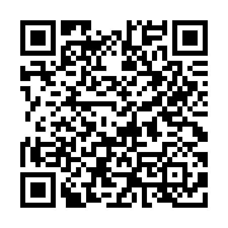

Quattro cartoncini per foglio A4, da tagliare lungo il tratteggio. Vanno bene sulla carta adesiva
bianca (seconda di copertina del menu) o su cartoncino. Il QR porta a
https://niubbone.github.io/VDC/iscrizione.html.
Prima di stamparne tanti, prova a inquadrare il codice col telefono da un foglio stampato.

Inquadra il codice e lascia i tuoi contatti per ricevere informazioni sui nostri prossimi eventi via mail o WhatsApp.